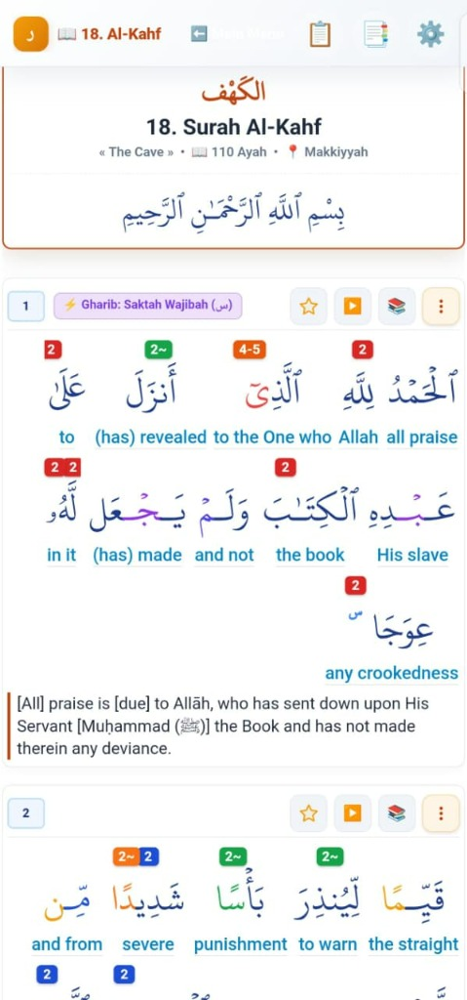
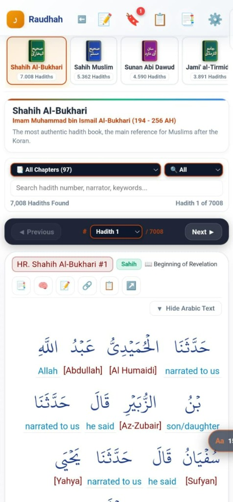
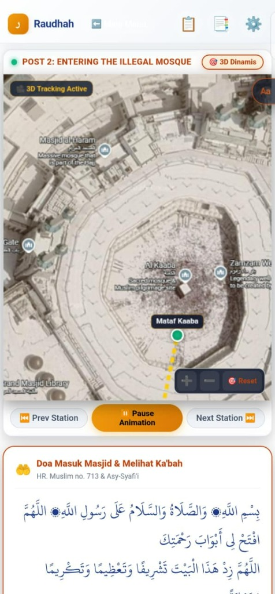
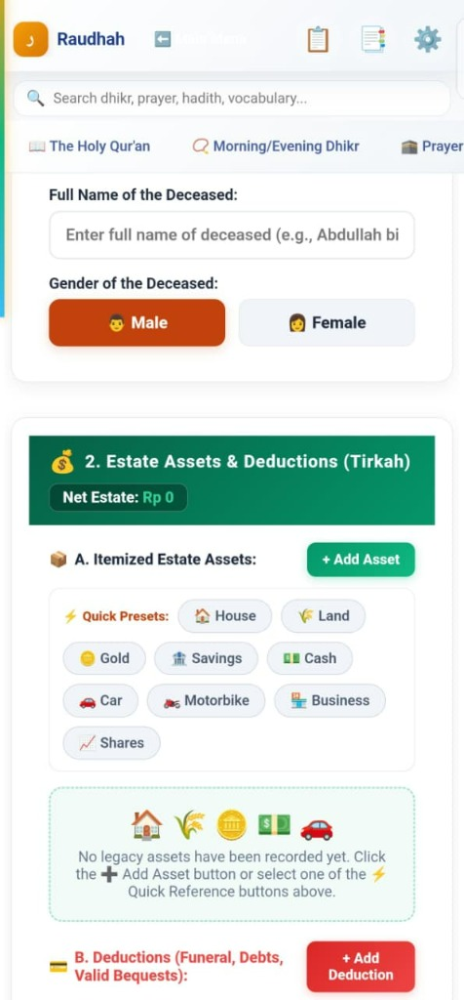
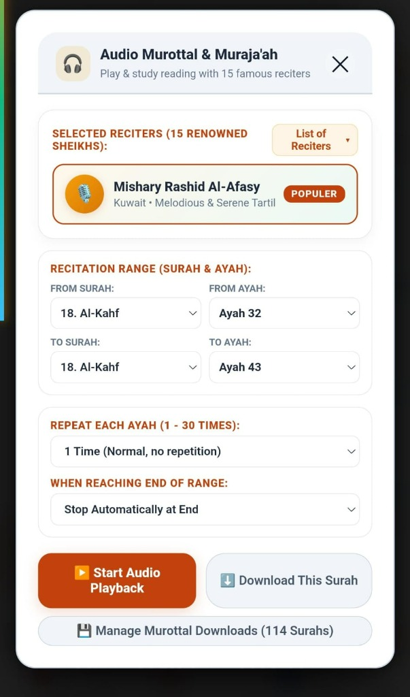

Raudhah: Islamic Worship & Sacred Knowledge Companion
A complete, ultra-lightweight, and 100% ad-free offline companion. Featuring Holy Qur'an 30 Juz word-by-word with dynamic tajweed, 62,169 Hadiths of 9 Imams, Sifat Shalat Nabi, Hisnul Muslim adhkar, 3D Hajj simulator, and automated Faraidh inheritance engine.
Comprehensive Sacred Knowledge & Worship Suite
Explore the 8 integrated modules developed with rigorous scholarly references and high-performance modern user interfaces.
Interactive Holy Qur'an 30 Juz (Word-by-Word)
Complete 114 Surahs and 30 Juz with word-by-word grammatical breakdown (I'rab), dynamic phonetic Tajweed color-coding (Madd, Ghunnah, Qalqalah, Ikhfa), smooth lookahead auto-scrolling, and multi-source classical commentaries (Tafsir Ibn Kathir, As-Sa'di, Muyassar).
- ▶ Word-by-word translation & linguistic breakdown for deep understanding.
- ▶ Dynamic Tajweed highlighting with customizable color thresholds.
- ▶ Single-screen Madinah Mushaf layout with zero lagging.

62,169 Hadiths of 9 Major Imams (Kutubut Tis'ah)
Comprehensive offline searchable database covering the 9 canonical Hadith collections: Sahih al-Bukhari (7,008), Sahih Muslim (5,362), Sunan Abu Daud (4,590), Jami` at-Tirmidhi (3,891), Sunan an-Nasa'i (5,662), Sunan Ibn Majah (4,332), Muwatta Malik (1,594), Musnad Ahmad (26,363), and Sunan ad-Darimi (3,367).
- ▶ Full Arabic text with authentic classification (Sahih, Hasan, etc.).
- ▶ Word-by-word vocabulary breakdowns for Hadith study.
- ▶ Instant chapter indexing and multi-keyword offline search.

Prophet's Prayer Described & Hisnul Muslim Adhkar
Step-by-step guidance strictly according to the Sunnah from Takbir, Iftitah, Ruku', Sujud, to Tashahhud & Salam. Includes morning/evening adhkar with digital tasbih counter and hundreds of verified Qur'anic and prophetic supplications.
- ▶ Complete Sifat Shalat Nabi with authentic references (dalil) and virtues.
- ▶ Morning & Evening remembrances with haptic digital tasbih.
- ▶ 17 Sunnah Post-Prayer Adhkar with pause markers (•) for tajweed pauses.
Interactive 3D Visual Hajj & Umrah Simulator
Visual pilgrimage route simulator with dynamic 3D satellite tracking covering Masjidil Haram (Mataf Kaaba), Madinah, Mina, Arafah, and Muzdalifah. Accompanied by authentic ritual step-by-step checklists and recommended supplications.
- ▶ 3D Tracking Active with interactive station-by-station navigation.
- ▶ Complete guide: Ihram, Tawaf, Sa'i, Wukuf, and Jamarat.
- ▶ Authentic du'as from Hadith for each holy site.

Automated Islamic Inheritance Calculator (Faraidh)
Shariah-compliant automated estate calculation engine following classical Islamic jurisprudence (*Mawaris*). Accurately calculates itemized assets (Tirkah), funeral expenses, debts, and valid bequests with transparent breakdown of legal shares (*Ashab al-Furud*) and residuary heirs (*Asabah*).
- ▶ Itemized asset calculation (houses, land, gold, savings, business, etc.).
- ▶ Clear deductive order: funeral expenses, settlement of debts, valid bequests.
- ▶ Mathematical division according to the Qur'an and authentic Sunnah.

Audio Murottal & Muraja'ah (15 Famous Sheikhs)
Play and study Qur'an recitation with 15 world-renowned reciters (Mishary Rashid Al-Afasy, etc.). Features flexible repetition controls (1 to 30 times per ayah), customizable recitation ranges, and offline download management for all 114 Surahs.
- ▶ 15 renowned Sheikhs with high-fidelity studio recordings.
- ▶ Targeted Muraja'ah ayah range repetition for memorizers.
- ▶ Offline caching and background audio playback.

Choose Your Preferred Edition
Both editions are completely free and ad-free. Choose the Lite Edition to conserve storage or the Full Offline Edition for the complete encyclopedic experience.
Compact & Ultra-Fast
Optimized for smaller device storage. Focuses on the core worship tools with rapid downloads.
- ✓ Complete 114 Surahs & 30 Juz Qur'an (Word-by-word)
- ✓ Prophet's Prayer Guidance & Sunnah Adhkar
- ✓ Hisnul Muslim & Verified Authentic Du'as
- ✓ Durusul Lughah Arabic Grammar & Vocabulary
- ✓ 3D Hajj Route Simulator & Faraidh Calculator
- ✕ Hadiths library & offline tafsirs excluded to save storage
The Complete Encyclopedia
The ultimate 100% offline Islamic library. Zero internet connection required after initial download.
- ✓ Everything included in the Lite Edition
- ✓ All 62,169 Hadiths of 9 Imams (Kutubut Tis'ah)
- ✓ Complete offline Tafsir libraries built-in
- ✓ Full narration chains & vocabulary definitions
- ✓ 100% self-contained: works everywhere, even off-grid
Free for Everyone. Supported by Pure Appreciation.
Raudhah is distributed as a Digital Waqf to empower Muslims and seekers of knowledge worldwide without any subscription or advertisement barrier.
Aplikasi ini adalah wakaf digital dan dapat diunduh 100% GRATIS. Bagi Anda yang ingin menyampaikan hadiah / tanda terima kasih (Gift) atas jerih payah rekayasa teknologi ini, Anda dapat menyertakan nominal seikhlasnya melalui Lemon Squeezy atau menu apresiasi di dalam aplikasi. Ini murni sebagai hadiah / apresiasi karya, bukan infak atau sedekah.
Enter 0 to download freely, or type any gift amount ($3, $5, $10, etc.) to support.
Get on Lemon Squeezy ($0 / Voluntary Gift)Quick & Easy Installation Guide
- Download the APK file (Lite for fast download or Full for complete offline Hadiths).
- Open the downloaded APK in your device file manager.
- If Android prompts "Install unknown apps", allow installation for your browser/file manager.
- Launch Raudhah and enjoy a peaceful, 100% ad-free experience!
- Download the standalone .exe (or extract the portable .zip folder).
- Double-click to launch Raudhah directly — no installer or admin setup required.
- If Windows SmartScreen displays "Windows protected your PC", simply click "More info" and then "Run anyway".
- All settings and offline data are safely stored on your local machine.